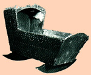

|
by Stefan Bielinski  Maria Sanders was born in October 1749. She was the daughter of Albany merchant and civic leader Robert Sanders and his second wife, Elizabeth Schuyler Sanders. Both her parents were dead before Maria reached adulthood but Robert Sanders's will provided her with a negro wench, clothing, silver and jewelry, and a share of his very substantial estate. So endowed and shy of her nineteenth birthday, Maria Sanders married Greenbush native Philip Van Rensselaer in February 1768. This union of the offspring of elite families produced twelve children who were baptized in the Albany Dutch church between 1768 and 1794 where both parents were members and pewholders. These Van Rensselaers lived in the family house on Pearl Street but Philip was more and more interested in developing the farm south of the city - where the family spent more and more of their time. Philip's business and then Revolutionary War-related duties often took him away from home. Maria's substantial role in her young husband's affairs is revealed in letters and business papers. After the war, the family settled more into their Cherry Hill property. Maria's children grew up on the expanding farm - leaving them with a sense of place that endured throughout their lives. Maria buried her husband in March of 1798. As executor and chief beneficiary of Philip Van Renssealaer's estate, the forty-eight-year-old widow shouldered responsibility for the continued development of Cherry Hill. Surrounded by her large family and attended by a half dozen slaves, Maria managed the farm and even added to those holdings. By the end of 1814, she had sold away her second ward property. Maria lived out her days at Cherry Hill. She died in 1830 - shy of her eightieth birthday. Her will was probated in 1831.
Photograph of a cradle in the collection of Historic Cherry Hill dated 1749 (enumerated in brass tacks) and branded "RS" for Robert Sanders. Probably made for Maria Sanders. Made of pine and covered with leather. Printed in Blackburn, Cherry Hill, p. 67, it testifies to the richness of the Cherry Hill collection. first posted: 2/15/02 |